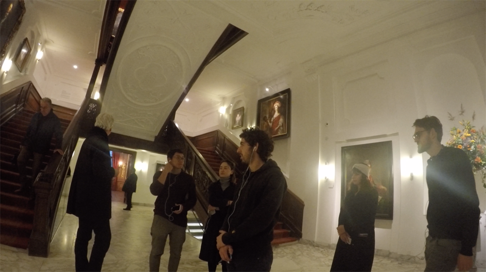
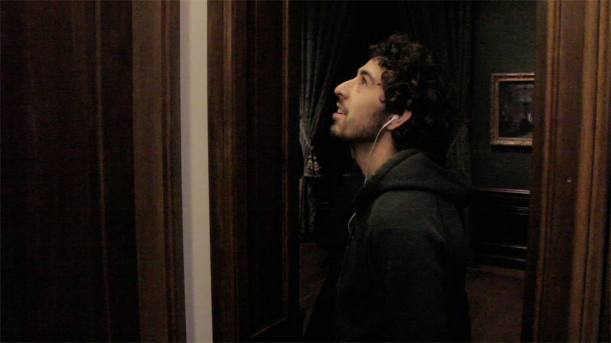

Alternative Audio Guide
After observing that the timings and paths that were being taken around the Maruitshuis Museum in The Hague correlated with museum’s iphone app, I created an alternative audio guide. The guide reveals some hidden truths of the museum’s power structures and colonial past/present, while encouraging a more comedic use of this formal space.
You can download and use the audio guide on your phone by right clicking this media player and clicking "Save Audio As...".
The tour starts from in front of the elevator on the first floor.
2017 at the Mauritshuis
with Thomas Rustemeter

